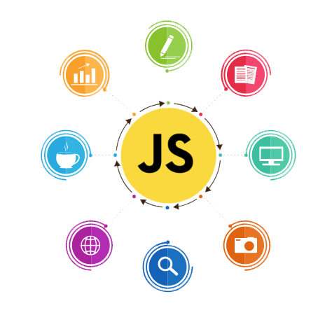

Calculadora.js
Entendendo melhor JavaScript
JavaScript é uma linguagem de programação usada para criar interatividade em sites. Ela funciona no navegador do usuário e permite coisas como animações, validação de formulários e solicitações de dados sem recarregar a página. Além disso, também pode ser usada no servidor para criar aplicativos web. JavaScript usa variáveis, funções e eventos para funcionar, e pode manipular a estrutura de uma página web através do DOM. É uma linguagem importante para desenvolvimento web e também é usada em outras áreas, como servidores (Node.js).
Além do uso fundamental do JavaScript para adicionar interatividade a sites e aplicativos da web, muitos desenvolvedores utilizam bibliotecas e frameworks JavaScript para simplificar o desenvolvimento e melhorar a eficiência.
Bibliotecas JavaScript: Bibliotecas são conjuntos de funções e métodos predefinidos que facilitam tarefas comuns no desenvolvimento web. Elas aceleram o desenvolvimento ao fornecer soluções prontas para uso.
Exemplos de bibliotecas e frameworks:


